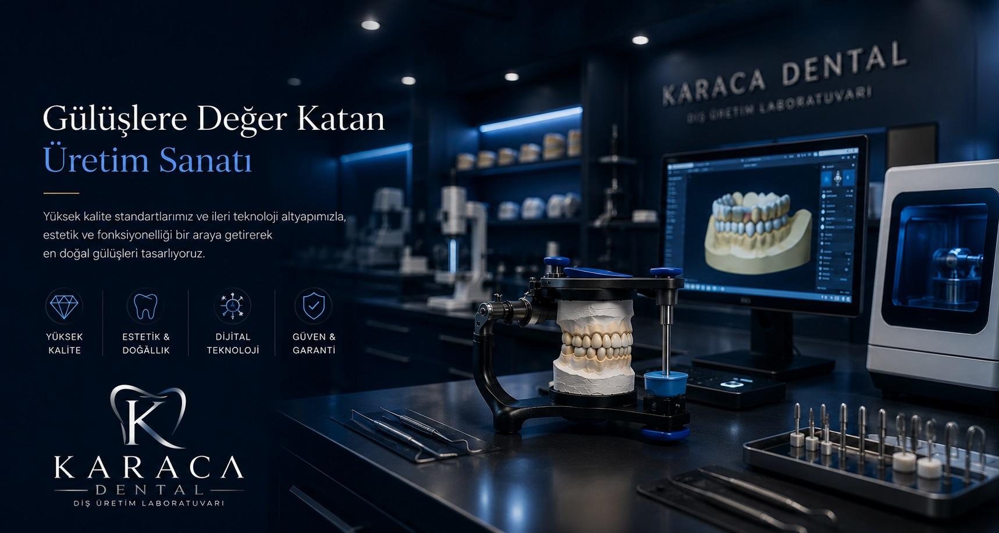

📜 Kurumsal Hikayemiz ve Teknolojik Vizyonumuz
Karaca Dental Diş Laboratuvarı olarak, 2003 yılında Ankara'nın kalbi Kızılay'da başladığımız üretim yolculuğunda, bugün dental sektörün dijital dönüşümüne yön veren öncü bir teknoloji üssü konumundayız. İnsan elinin hassasiyetini En yüksek mühendislik disipliniyle birleştiriyoruz.
Gülüş tasarımlarında sıfır hata payı ve mikron düzeyinde hassasiyet elde edebilmek adına, laboratuvar altyapımıza çok büyük sermayeler aktararak dünyanın en saygın dental teknoloji markalarının cihaz parkurlarını bünyemize kattık. En üst düzey 3D optik tarayıcılar, endüstriyel tip çok eksenli (5-Axis) CAD/CAM kazıma cihazları, hassas lazer sinterizasyon üniteleri ve dijital 3D yazıcı teknolojilerimizle kliniklerimizin tüm estetik ve fonksiyonel taleplerini karşılıyoruz.
Milyonlarca liralık AR-GE ve cihaz yatırımlarıyla desteklediğimiz modern üretim tesisimizde; biyo-uyumluluğu en üst seviyede olan sertifikalı bloklar kullanarak Zirkonyum kaplamalar, ultra estetik Cam Seramik (Empress/E.max) restorasyonlar ve implant üstü protezlerde kemik ve diş eti sağlığını maksimum düzeyde koruyan kişiye özel titanyum barlar (Ti-Bar Custom Abutment) üretiyoruz.
20 yılı aşkın köklü tecrübemiz, sürekli eğitimlerle vizyonunu tazeleyen uzman teknisyen kadromuz ve zamanında teslimat hassasiyetimizle dental sektörden gelen talepleri eksiksiz karşılıyoruz. Karaca Dental, sadece diş üreten bir laboratuvar değil; hekimlerin klinik başarılarını ve hastaların yaşam kalitesini yukarı taşıyan yüksek teknolojili bir çözüm ortağıdır.